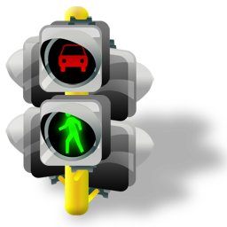
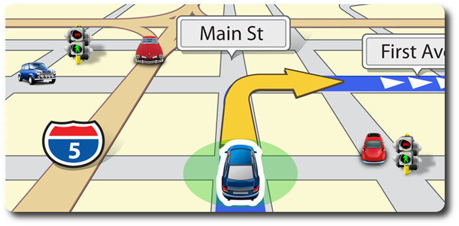

Problem:
- Most agents-based platforms designed for traffic simulation:
- in fact are not multiagent systems, because processing and information are centralized
- use simplified traffic hypothesis, far from real scenarios
- do not consider more than one system actor in the traffic system
Our goals:

- Create an agent-based plataform that addresses:
- the application of autonomous agents and multiagents systems
- traffic light control
- the consideration of effects caused by actors adaptation
- the integration of questions related to routing and dynamic allocation
